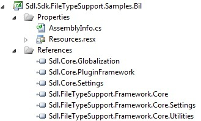

Creating a New Project
Learn how to properly set up a project for developing a bilingual file type plug-in.
Create the Project
Launch Microsoft Visual Studio 2022 and create a new Trados Studio Plug-in Project. Give it an appropriate name, such as Sdl.Sdk.FileTypeSupport.Samples.Bil.
For instructions on creating a Trados Studio Plug-in Project, see the Creating a New Project and Build the File Type Plug-in topics.
Add the Required References
Add references from the File Type Support Framework APIs. These references are contained in the following assemblies:
- Sdl.FileTypeSupport.Framework.Core.dll — The main reference to the File Type Support Framework API
- Sdl.FileTypeSupport.Framework.Core.Settings.dll
- Sdl.FileTypeSupport.Framework.Core.Utilities.dll
Add references from the Core APIs:
- Sdl.Core.Globalization.dll
- Sdl.Core.PluginFramework.dll
- Sdl.Core.Settings.dll
By default, these files are in the Trados Studio installation folder (usually C:\Program Files\Trados\Trados Studio\Studio19). Set the Copy Local property for these references to True.
Generate a key to sign the assembly. For debugging, set SDLTradosStudio.exe as the external application.
Add the Required Resources
Add a resources file (Resources.resx) to the project's properties. Use this resources file for storing file type plug-in information that Trados Studio displays in the user interface.

Add an icon to the project. Find a suitable icon file (Bil.ico) in the Sdl.Sdk.FileTypeSupport.Samples.Bil folder of the SDK sample projects. Set the Build Action property for the icon file to Embedded Resource. Users see this icon in the Options dialog box of Trados Studio.
Note
This content may be out-of-date. To check the latest information on this topic, inspect the libraries using the Visual Studio Object Browser.